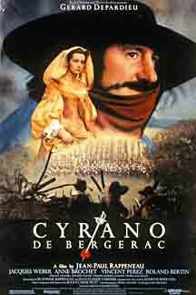

#2796 Cyrano von Bergerac
Auszeichnungen: 1 Oscars gewonnen für 4 Oscars nominiert 1 GoldenGlobes gewonnen 4 BAFTA-Awards gewonnen
 
 IMDB-Wertung: 7.5 / 10
IMDB-Wertung: 7.5 / 10  Metascore: 79
Metascore: 79 
Französischer Historienfilm aus dem Jahr 1990 mit Gérard Depardieu in der Hauptrolle. Der Text folgt dem gleichnamigen romantischen Theaterstück von Edmond Rostand, das in Versen verfasst wurde. Cyrano, Degenkämpfer und Edelmann, geht zwar erfolgreich aus jedem Zweikampf hervor, leidet aber unter seiner großen Nase. Er verliebt sich in seine Cousine Roxanne.
Jahr: 1990
Dauer: 138 Minuten
FSK: 12
Land: Frankreich Studio: Concorde FilmverleihTonspuren:
Untertitel:
Auflösung: 720p (1200x720) Größe: 5591 MB
Genre: Drama, Komödie, Liebe, Geschichte, Biographie
Regisseur: Jean-Paul Rappeneau
Drehbuch: Edmond Rostand, Jean-Paul Rappeneau, Jean-Claude Carrière
Soundtrack: Kurt Kuenne, Jean-Claude Petit
Darsteller:
 Gérard Depardieu als Cyrano De Bergerac
Gérard Depardieu als Cyrano De Bergerac Anne Brochet als Roxane
Anne Brochet als Roxane Vincent Perez als Christian de Neuvillette
Vincent Perez als Christian de Neuvillette Sandrine Kiberlain als Sister Colette
Sandrine Kiberlain als Sister Colette- Quentin Ogier als Baker's Boy
 Ludivine Sagnier als The Little Sister
Ludivine Sagnier als The Little Sister- Jacques Weber als Comte De Guiche
- Roland Bertin als Ragueneau
- Philippe Morier-Genoud als Le Bret
 Pierre Maguelon als Carbon de Castel-Jaloux
Pierre Maguelon als Carbon de Castel-Jaloux- Josiane Stoléru als The Duenna
- Anatole Delalande als The Child
- Alain Rimoux als The Father
- Philippe Volter als Vicomte de Valvert
 Jean-Marie Winling als Lignière
Jean-Marie Winling als Lignière- Louis Navarre als The Bore
- Gabriel Monnet als Montfleury
- François Marié als Bellerose
- Pierre Triboulet als Jodelet
- Baptiste Roussillon als First Soldier
- Christian Roy als Second Soldier
- Jacques Pater als The Footpad
- Christian Loustau als Cadet
- Alain Perez als Cadet
- Franck Jazédé als Cadet
- Eric Bernard als Cadet
- Frank Ramon als Cadet
- Alain Dumas als Cadet
- Hervé Pauchon als Cadet
- Luc Alexander als
- Pierre Aussedat als First Marquis
- Yves Aubert als Second Marquis
- Jean-Damien Barbin als Conceited Young Man
- Gérard Beaume als
- Cécile Camp als Gremione
- Dominique Chevalier als
- Nicole Chomo als
- Christine Culerier als Uranie
 Michel Fau als Ragueneau's 2nd Poet
Michel Fau als Ragueneau's 2nd Poet- Nicole Félix als The Matron
- Catherine Ferran als Lise Ragueneau
- Éric Frey als Second 'Precious' Poet
- Claudine Gabay als Bad-tempered Nun
- Balázs Galkó als
- Philippe Girard als De Guiche's Officer
- Amélie Gonin als Sister Marthe
- Isabelle Gruault als Sister Claire
- François-Xavier Hoffman als
- Françoise Lervy als
- Madeleine Marion als Mother Superior
Datei: X:\1990\Cyrano von Bergerac (1990, FSK12, 1200x720).mkv seit 16.12.2015
Festplatte: HD 1987-1991
 Es gibt insgesamt 52 Filme in der Gruppe '1990'
Es gibt insgesamt 52 Filme in der Gruppe '1990'